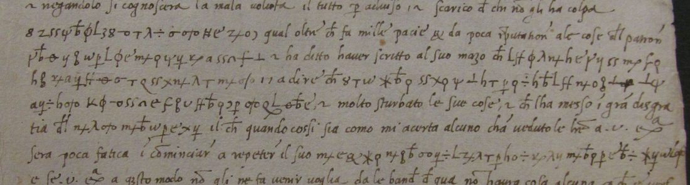

At a glanceKey from external plaintext · partial · V1921 161 of 166 signs (97.0%); R1139 89.7%, R1136 66.9% of decoded letters
- The letters
- Giuliano Caprile, canon of Eger and secretary of Cardinal Ippolito d’Este, to the ducal secretary Bonaventura Pistofilo and to Duke Alfonso I, March 1520 to April 1521: five texts in one cipher.
- Where
- Archivio di Stato di Modena, Ambasciatori, Ungheria b. 4; DECODE R1136, R1138, R1139 (catalogue item 157), and the Hungarian database Vestigia, where the letters of 16 and 25 February 1521 (Vestigia 1920, 1921) are not on DECODE.
- The cipher
- A homophonic cipher of invented signs with no word division, crossed ligatures for s and q.
- How it was deciphered
- One postscript of 16 February 1521, in both its versions, was deciphered by Judit W. Somogyi in 2025. Her two printed texts, aligned against a transcription of the signs, gave the key. On 2 October 2026 the letter of 25 February 1521 added five values, and second transcriptions of R1139 and R1136 at full resolution were deciphered with them.
- What it says
- Ippolito’s estate at Eger after he left Hungary: the custode, the governor, the see, money and debts. On 25 February 1521 Caprile reports that il custode è stato quel ch’à persuaso others to say Eger had been given away before the new bishop came, and advises the Duke to reclaim what is due sopra soi beni.
- Measured
- V1921: 161 of 166 cipher signs give sense (97.0%), 147 at grade C. R1139: 453 of 505 decoded letters inside deciphered phrases (89.7%, 3 October 2026). R1136: 378 of 565 (66.9%). Over the three letters deciphered here, 992 of 1,236 (80.3%).
- Still open
- Stretches of R1139 and a third of R1136, limited by doubtful sign separations.
- Other ciphers
- Caprile’s 1519 letters use a different two-tier cipher, with its own page; Alfonso Cistarelli’s numerical cipher of July 1520, in the same box, also has its own page.

01 The records
| DECODE | ASMo b. 4 | Vestigia | Date | What was found |
|---|---|---|---|---|
| R1136 | 1519–20 no. 11 | 1876 | 8 Mar 1520 | Twelve lines in the sign cipher, no decipherment. Deciphered in part here (66.9%). |
| R1138 | 1520–21 no. 10 | 1919 | 16 Feb 1521 | Postscript on a slip. Deciphered by W. Somogyi (2025). |
| — | 1520–21 no. 11 p. 3 | 1920 | 16 Feb 1521 | Second version of the same postscript; not on DECODE. Deciphered by W. Somogyi (2025). |
| — | 1520–21 no. 12 | 1921 | 25 Feb 1521 | Six cipher runs inside clear sentences; not on DECODE. Deciphered here, 161 of 166 signs. |
| R1139 | 1520–21 no. 13 | 1922 | 6 Apr 1521 | Nine lines of the sign cipher on a slip. Deciphered in part here (89.7%). |
The Vestigia records flagged as cipher in the 1519–21 files are these five, Caprile’s 1519 letters and Cistarelli’s: no other letter uses the 1520–21 key. Caprile’s 1519 letters are in a different, two-tier cipher, most of them deciphered in 1882; the one left without a decipherment, R1128, is on its own page.
02 The key
The cipher is a run of invented signs with no word division: φ, ψ, λ, ÷, ss, ff, a crossed b, m and n with a cross, an inverted T, and some forty more. There are 49 labels in all, over 2,278 signs in five texts, transcribed from the DECODE and Vestigia images. Somogyi calls it homophonic, and it is. The key was built in two steps:
- A ciphertext-only solver run (simulated annealing) over all five texts, scored with a sixteenth-century Italian n-gram model. It gave a rough key in which scritti, regno, signore and Ungaria could already be recognised.
- That key seeded a monotone alignment (Viterbi with gaps, re-estimated until stable) of the transcription against Somogyi’s two texts. 714 letters align, and 90% of alignments agree with the majority value of their sign.
The values:
a = q, T, ⊥ · c = φ, θ · d = ψ, r · e = y, ss · g = w, u · i = ƀ, ɔ, L · l = ff, n · m = z, Ħ · n = ÷, p · o = ɛ, the stacked q/b, oσo · p = & and its looped variant · r = *, x · s = m+, n+ · t = h, f · u = λ, a
The letter of 25 February 1521 corrected and extended these values (2 October 2026). The lone o, taken at first for a null, is a homophone for h and u (“ha”, “ch’à”, “qui”, “suo”), as the alignment counts had already shown; two lone o together are b (“beni”, and R1139’s “debito”); z and x with a cross, and x with the looped p, are q (“qui”, “quel”, “quantunque”); the looped p doubles for f (“oficio”); and K is et once. The second transcriptions of R1139 and R1136 added o with a cross = s, the crossed 3 and 3 with the looped p = q, the triangle = b or x, plain c = o, and o with a lead-in = h. The figure 8 is a null in one place.
A statistical check on the letter of 25 February (161 tokens, 42 sign types) scores the reading well above random keys (z 6.6), but a key annealed onto the shuffled ciphertext reaches the same score, so the test alone cannot confirm the key on so short a text: verdict underdetermined. The key’s support is the alignment with Somogyi’s two texts and the sense of the three letters it deciphers.
03 The letter of 25 February 1521 (Vestigia 1921)
Caprile to Duke Alfonso I from Esztergom, 25 February 1521 (Caprili 1520–21 no. 12). It is not on DECODE; Vestigia has it as item 1921, flagged as containing cipher. The letter is in clear until its last third, where six cipher runs are set inside clear sentences. They were transcribed sign by sign on the Vestigia image, with four corrections to the first transcription, and deciphered with the key on 2 October 2026.

161 of the 166 cipher signs give sense (97.0%); 147 of them (88.6%) at grade C, with every sign at its key value. On a sixteenth-century Italian model the reading scores −1.79 per character, against −4.12 for the same letters shuffled. Clear text in roman, the deciphered runs in bold:
… il tutto per adviso e scarico di chi ne ha colpa. E me dicixe ha un omo qui qual oltra che fa mille pacie & da poca riputation ale cose del patron, dice ogni cosa e revelta, e ha ditto haver scritto al suo mazo che il custode è stato quel ch’à persuaso [..] a dire che [.] Agria era data d’anti il suo advento, e[t] che lo toglia in oficio, e molto sturbato le sue cose, e chi l’ha messo in gran disgratia di suo signore; il che quando cossi sia, como mi acerta alcuno ch’à veduto le lettere, a V. Ex.a sera poca fatica i cominciar a repeter il suo sopra soi beni, quantunque siano in reg[..].
“And he told me there is a man here who, besides committing a thousand follies and bringing little credit to the master’s affairs, tells everything and [gives it away]; and he has said he wrote to his [messenger] that it was the custode who persuaded [them] to say that Eger had been given away before his arrival, and that he should take him into office … and put him in great disgrace with his lord. If that is so, as someone who has seen the letters assures me, it will be little trouble for Your Excellency to begin reclaiming what is his from his goods, even though they are in the kingdom.” The patron and the claim are Ippolito d’Este’s Eger bishopric, the subject of R1136, R1138 and R1139. Dicixe (for disse?) and revelta are grade M. Open: two minim strokes after persuaso with no key value, one sign before Agria (probably a slip), and two signs at the torn edge after in reg.
04 R1139, 6 April 1521 (partial)
A slip pasted into the letter of 6 April. Nine lines of cipher, then the clear text “Expettamo sino a S. Georgio…”. The phrases the key gives with confidence (grade C):
Post: il custode … io scrissi … è tornato governator de[l] … ogni cosa … è tenuto Agria … in castello … la venuta … in Italia … li scritti … vedendo io … deli danari del suo … come mi disse … lui m’ha resposto dice de voler andar in Italia quando al dare … Milan … parlaremo a longo sopra ciò … per andar … el mi dirà …
It is the estate business of Somogyi’s article: the keeper (custode) and the governor of Eger, “the money of his” (the late bishop’s), and someone who says he wants to go to Italy.
Second pass (30 September 2026). The signs were re-checked on the image wherever the decrypt did not read, and letters were proposed from the key’s sign counts with an Italian language model and checked against the signs. Three transcription errors were found (the sign after custo is the tall-stem r, so custode; the looped sign in teneva per is a p; the sign in andata is the crossed p, n). The middle of the slip now reads continuously (C where the key gives every letter, M where one or two signs are given a value against the key majority; [brackets] supplied):
… et cosi la venuta sua in Italia … li teneva per ferm[a] e andata in [v]ero; il che vedendo io, … li go fato moto deli danari del suo de[b]ito, come mi dise messere [Alfonso]. Lui m’ha resposto, dice [de] voler andar in Italia quando al dare … Milan … andiate; parlaremo a longo sopra ciò … danari in [p]resto(?) per andar[vene] … vedrò quel mi dirà, e il tuto reportarò a V. Ex.
“… and so his coming to Italy … seeing which, … I have raised with him the money of his debt, as messer Alfonso told me. He has answered me, saying he wants to go to Italy … we shall speak at length about it … I shall see what he tells me, and report it all to Your Excellency.” Go is the Venetian-Ferrarese gh’ò (I have); fato moto is fatto motto (mentioned). The name is enciphered alponso: the sign read p is p five times elsewhere, so Alfonso (probably Alfonso Cistarelli, the cardinal’s agent at Eger) is grade M. Line-by-line reading: targets/caprile1520/r1139_pass2.txt.
Third and fourth passes (2 October 2026). The slip was decoded again with the values from the letter of 25 February, and then transcribed a second time from the DECODE image at full resolution. 448 of the 505 letters it decodes to then fell inside deciphered phrases (88.7%), up from 83.8% after the third pass (89.7% after pass 5, below). The first three lines now give sentences, and debito reads at key values (two lone o = b):
[Post.] Il custode, quando a Buda, come i’ scrisi, è tornato gubernator de [4 8 1 7] … decime, et fa ogni cosa per[…] [1 7] … si è tenuto Agria in oficio. Credo dia ogni ato e qualche cosa a le ma[n] di [l]o custode; per anchora si n’è intrato … in castelo, et cosi la venuta sua in Italia … che vi scrivi, qual li teneva per ferma e andata in vero; il che vedendo io, … li go fato moto deli danari del suo debito, come mi dise messer Alfonso. Lui m’ha resposto, dice te voler andar in Italia quando al dare … Milan … andiate; parlaremo a longo sopra ciò … danari in [p]resto, per andar ve ne darò; vedrò quel mi darà, e il tuto [re]portarò a V. Ex.
“The custode, when [he was] at Buda, as I wrote, has returned as governor of … Eger has been kept in office. I believe he gives every act and something into the hands of the custode; so far he has not entered … into the castle”. The groups 4 8 1 7 and 1 7 look like figures or code signs and have no key value. Reading and grades: targets/caprile1520/pass3_r1136_r1139.md.
05 R1136, 8 March 1520 (partial)
Twelve lines after a clear opening, written the day after Ippolito crossed out of Hungary for the last time (7 March 1520). Grades C and M:
e la susseguente matina … il custode … questo episcopato … il custode … governator … Lactantio … tesoro … in gran … conclusi … congrega[tione] … ogni episcopa[to] … in questo modo … poco spensi … Excellentia … al custode … de Ungaria sopra il suo … secondo … tornato … intendere … [s]pensier suo … tal debito
Second transcription (2 October 2026). Eleven of the twelve lines were transcribed again from the DECODE image at full resolution and deciphered with the corrected key. 378 of the 565 letters the lines decode to now fall inside deciphered phrases (66.9%), up from 59.4% with the old transcription:
[clear: e la susseguente matina] …asi transferse a Buda il custode … in oficio questo episcopato, et a epso custode … […]o guernator … Lactantio, ho inteso, qual … in gran pre[s]ia … dicono esser conclusi … congregati … Bachiensis, che ogni episcopa[to] … l’altro in titolo, et a questo modo excluderà … li daran poco … vostra Excelentia, quel si- … potrà far al custo[d]e per questa via de Ungaria sopra il suo … debi[to] … secondo … patrone … in questo loco niente … tornato el sia … e vedrò intendere il … spensier suo … tal debito
The morning after Ippolito’s departure the custode moved to Buda; then the see of Eger, its custode and governor, Lactantio, the prelates gathered (Bachiensis is the archbishop of Kalocsa-Bács), and the advice that the Duke “can act against the custode by this route in Hungary, on his [goods]”, the claim Caprile repeats a year later on 25 February 1521. Line 6, the starts of lines 10 and 11 and the end of line 1 do not yet decipher: the limit is the doubtful separation of a few sign pairs (c/ɛ/e, the stacked q/b and 8, the two p-signs, x and x with the looped p), not the image.
06 What stays open
- The rest of R1139 and R1136. After second transcriptions at full resolution and two more passes on 3 October 2026, 10% of R1139 and 33% of R1136 still do not decipher. In R1139 these are the figure-like groups
4 8 1 7and1 7and short stretches of lines 2, 4–5 and 8; in R1136, a stain over about six signs at lines 1–2 and the stretches limited by doubtful sign separations. A table of the look-alike sign pairs over all five texts (pass 5) settled only two of them (CE= o, crossedxp= q), and added mi per Milan in R1139 line 8; a study of the pen shapes (pass 6) found no shape class with a consistent value.4 8 1 7and1 7fit neither as letters nor as numerals, and are probably nomenclator codes with no list. - V1921. Five of 166 signs stay open (no key value, a slip, the torn edge); dicixe and revelta are grade M.
- What would finish it. Hand-placed crops of every occurrence of the doubtful sign pairs, or more text in the same key. No further letter in this cipher exists in the file.
07 Sources
- Archivio di Stato di Modena, Archivio Segreto Estense, Cancelleria, Carteggio ambasciatori, Ungheria b. 4. Images via DECODE R1136, R1138, R1139 (login) and Vestigia (vestigia.hu), items 1876 and 1919–1922; the letter of 25 February 1521 is item 1921 (image of p. 1).
- ASMo inventory, Carteggio ambasciatori, Ungheria (PDF).
- Judit W. Somogyi, “Estei Hippolit püspöki hagyatéka Giuliano Caprili magyarországi leveleinek tükrében”, Scriptorium VI (2025) 247–264 (REAL), n. 50: the decipherments of the 16 February 1521 postscript used as the crib.
Transcriptions, key, alignment scripts and notes: targets/caprile1520/ in the repository. This entry was split on 14 October 2026 from the old Caprile and Cistarelli page (one key per entry).